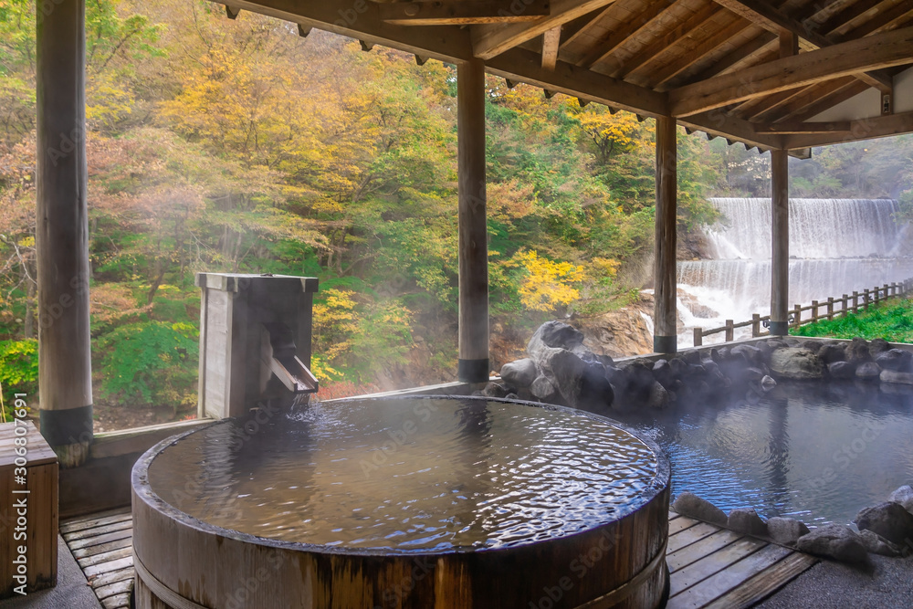
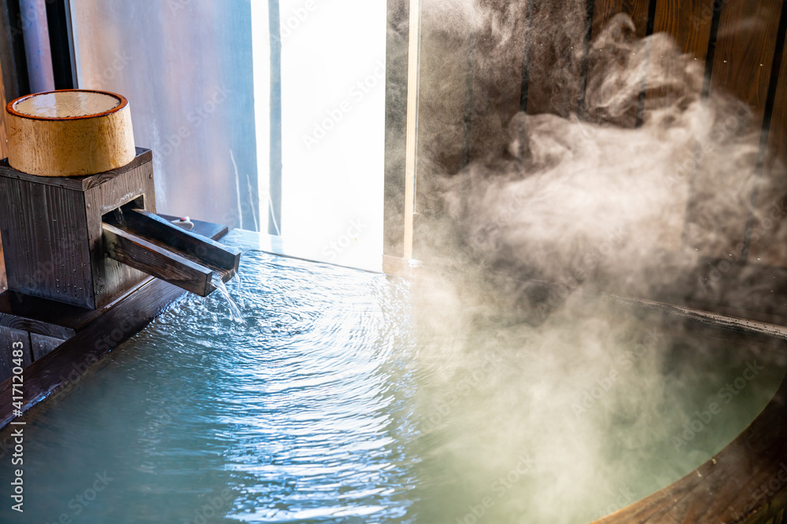
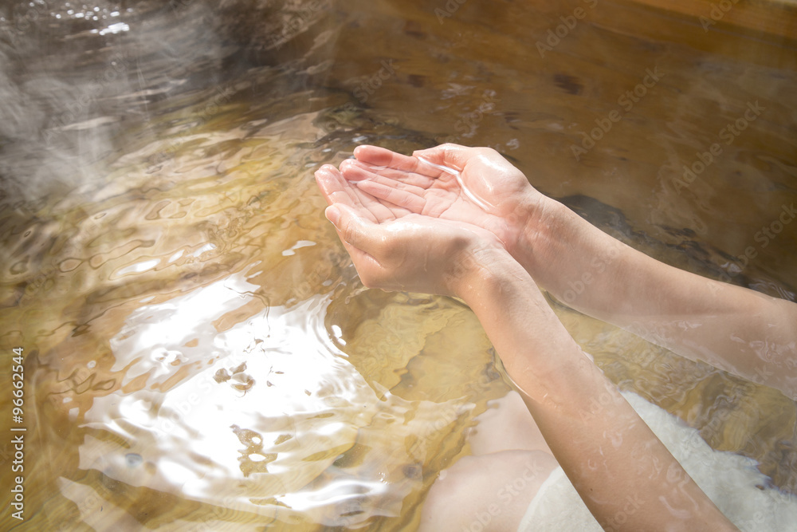

温泉について
-

満天の湯
「満天の湯」は、四季折々の自然を感じながらゆったりと入浴できる露天風呂です。この露天風呂では、豊富なミネラルを含んだ天然温泉が贅沢に使用されており、心地よいひとときを提供します。温泉に含まれる成分が血行を促進し、筋肉の緊張を和らげることで、リフレッシュ感が得られます。
「満天の湯」の最大の魅力は、星空を眺めながらの入浴です。自然に囲まれた開放的な空間で、温かい湯に浸かりながら、深いリラクゼーションを体験できます。湯の温もりが心身を癒し、日々のストレスを解消するのに最適です。
当施設の露天風呂では、清潔で落ち着いた雰囲気の中、自然と調和した贅沢な時間をお楽しみいただけます。「満天の湯」で、心と体を癒し、至福のひとときをお過ごしください。
-

なごみの湯
「なごみの湯」は、自然の恵みが溢れる天然硫黄泉を誇ります。この温泉は、豊富なミネラル成分を含み、肌に優しく、しっとりとした美肌効果を実感できます。硫黄成分が皮膚の新陳代謝を促進し、肌のトラブルを和らげるだけでなく、心身をリフレッシュさせる効果もあります。
温かい湯に浸かることで、血行が促進され、肩こりや腰痛などの筋肉の疲れが軽減されます。また、リラックスした時間を過ごすことで、日々のストレスを解消し、心も体も癒されるでしょう。
当施設では、源泉掛け流しの新鮮な温泉をご用意しており、清潔で落ち着いた浴場で至福のひとときをお過ごしいただけます。「なごみの湯」で、心と体の両方をリフレッシュし、ゆったりとした時間をお楽しみください。
-

炭酸泉
当温泉施設の炭酸泉は、心地よい微細気泡が特徴の天然温泉です。炭酸ガスが豊富に含まれており、入浴することで血行が促進され、体のこりや疲れが和らぎます。炭酸の泡が肌に優しく触れ、リラックス効果とともに、温かい湯が心地よいひとときを提供します。
炭酸泉の入浴は、血液循環の改善だけでなく、肌の保湿や美肌効果も期待できます。気泡が肌を包み込み、しっとりとした感触を与えることで、よりなめらかで健康的な肌へと導きます。リラックスしながら心身の疲れを癒すのに最適です。
当施設では、新鮮な炭酸泉を源泉掛け流しでご提供しています。落ち着いた雰囲気の浴場で、贅沢なひとときをお楽しみいただけます。ぜひ、炭酸泉の心地よい効果をご体験ください。